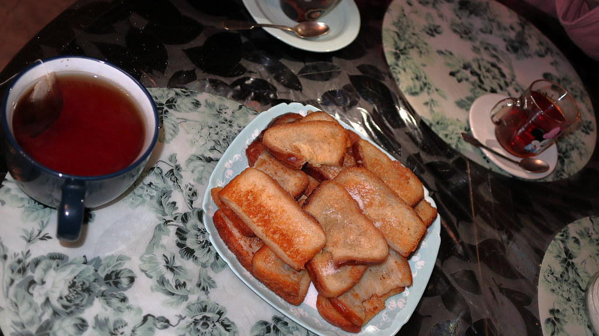
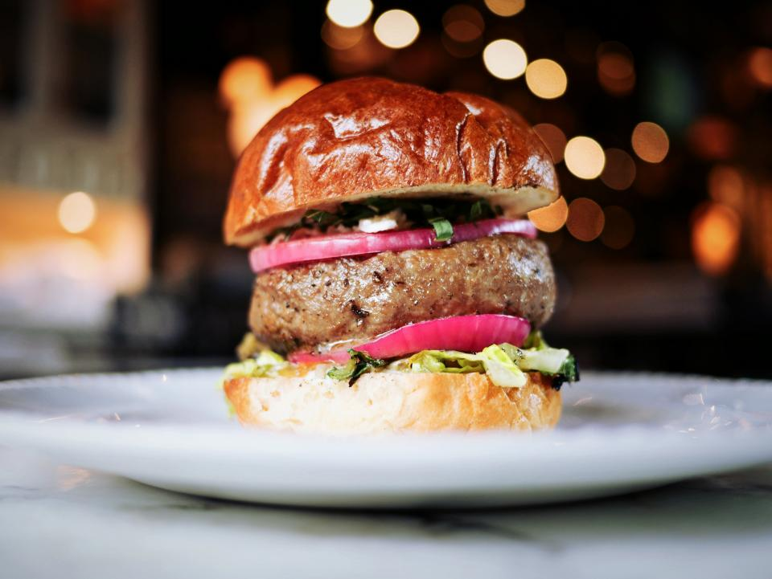
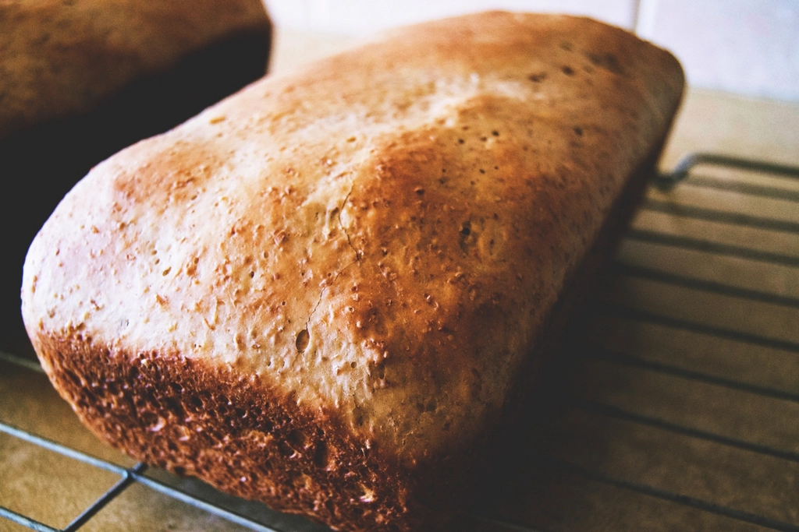
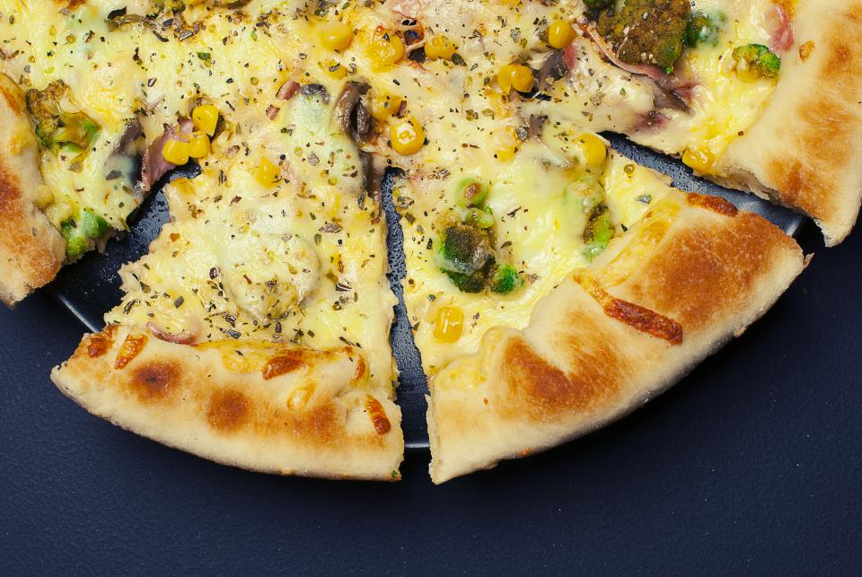
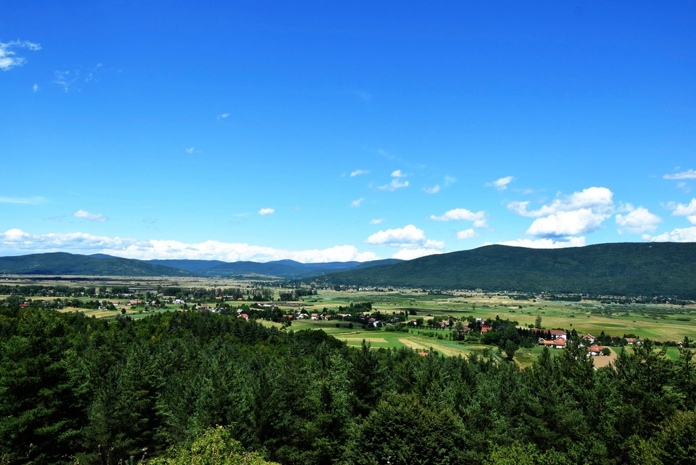

NO.01 — SANDWICH
おかず系サンド
ずらりと並ぶのは、具材をたっぷり抱えたボリューム満点のおかず系サンド。お腹も満たされる食べ応えで、気取らない価格帯なのも日常使いにうれしいところです。

一部の写真はフリー素材のイメージです。実際の店内・パンの様子は貴店ご提供のものに差し替えます。
Morning Light
麦畑の香りを抱いて店に並ぶパンは、焼き上がったばかりの午前中がいちばん賑やかです。トレイいっぱいに並んだ焼きたてのパンから、おかず系のサンドも、甘いパンも、好きなものを好きなだけ選べる時間。
人気のパンほど早い時間に棚から姿を消してしまうことがありますが、それは裏を返せば「選ばれている証」。朝の早い来店は、いちばん品揃えの豊かな瞬間に出会えるチャンスでもあります。
開店時間は時期によって変わることがありますので、お出かけ前に一度お問い合わせいただくと安心です。
来店前に営業時間を確認する →The Bakery Table
指でスライドしてご覧ください →
ずらりと並ぶのは、具材をたっぷり抱えたボリューム満点のおかず系サンド。お腹も満たされる食べ応えで、気取らない価格帯なのも日常使いにうれしいところです。

話題になるのがビーフカレーパン。お客様からは「カレーパンでこんなに辛いのは初めて」という声も届くほどのしっかりとした辛さ。辛いもの好きの方にはぜひ挑戦していただきたい一品です。
小腹を満たすおかず系の隣には、ほっとひと息つける甘い系のパンもいろいろ。イートインスペースでコーヒーと一緒にいただけば、買い物帰りのひとときがちょっとした休憩時間に変わります。

厚切りの玉ねぎフライがごろりと主張するハンバーガーは、フレッシュなトマトとレタスがアクセントに。ひと口でボリュームと満足感が伝わる一品です。

雑穀入りのチャバタで仕立てたサンドは、ほどよくからしの効いた濃厚なクリームチーズとパストラミの組み合わせが好相性。ランチにも軽めの食事にもぴったりです。
※参考価格帯:パンは200〜300円台が中心です(時期により変動する場合があります。正確な価格は店頭またはお問い合わせにてご確認ください)。
The Wood-fired Oven

窯から取り出したばかりのピザは、表面はカリッと香ばしく、中はもちもちとした食感。3種の中からお好きな一枚(または二枚)を選んでいただけます。
定番の美味しさで選ばれているのがマルゲリータ。そして新しく登場したコーン&ベーコンピザは、夏限定の自家製ソースを使った一枚で、季節ならではの味わいが楽しめます。
香ばしい生地の耳まで美味しく食べられるのも、釜焼きならではの魅力です。テラス席でできあがったばかりの一枚を味わう時間は、この店ならではのちょっと特別なひとときになります。
※ピザの提供時間は時期により異なります。お問い合わせください。
※コーン&ベーコンピザは季節限定の商品です。販売状況は店舗にご確認ください。

Terrace Hours
店内のイートインスペースに加えて、外にはテラス席も用意されています。買い物帰りにちょっと腰かけてパンを頬張る日常の時間も、家族そろって釜焼きピザを囲む特別な時間も、どちらも気負わずに過ごせる場所です。
まわりに広がる田園風景を眺めながら、風に吹かれてのんびりするひととき。小さなお子さま連れのご家族にも、ゆったりとくつろいでいただけます。
Voices
ご来店のお客様(1)
数ヶ月前
郊外の田園風景の中にあるパン屋さんで、イートインもできます。並んでいるパンはどれも美味しそうで、目に留まったピザを注文しました。3種の中から2枚選べて、コーン&ベーコンピザは新商品らしく、夏限定の自家製ピザソースがとても美味しかったです。マルゲリータも含めて、生地は表面カリッと、中はふんわりとした食感でおいしかったです。パン屋さんでイートインができるのは珍しく、テラス席まで充実しているので、日常的な利用はもちろん、ちょっと特別な時間を過ごしたいときにもぴったりのお店だと思います。
ご来店のお客様(2)
数ヶ月前
ファミリー向けの素敵なパン屋さんです。種類はそれほど多くはありませんが、気に入るパンが必ず見つかります。特にボリューミーなおかず系のサンドが充実していて、どれも比較的リーズナブルでお求めやすいのが嬉しいところ。ちなみにビーフカレーパンはかなり辛めで、カレーパンの中でもかなりしっかりとした辛さでした。おかず系サンドはおすすめです。
ご来店のお客様(3)
数ヶ月前
休日の少し遅めの時間に伺ったところ、駐車場は空いていたものの、店内に入ると多くのパンが売り切れていました。気になったパンはいくつか購入できましたが、次はもう少し早い時間にリベンジしたいと思います。
ご来店のお客様(4)
数ヶ月前
オシャレなカフェ風のパン屋さんです。パンの価格帯は手に取りやすい範囲で、玉ねぎフライのハンバーガーをいただきました。玉ねぎはかなり厚めで、トマトとレタスのフレッシュさが良いアクセントになっていました。店内にはサンドイッチや甘いパン、コーヒーも多数あり、イートインスペースも充実しています。釜焼きピザの提供もあり、タイミングによって楽しめるのが魅力です。
ご来店のお客様(5)
数ヶ月前
とても美味しくてリーズナブルなパン屋さんです。イートインスペースとテラス席があり、本格釜焼きピザも楽しめます。焼きたてのピザと、持ち帰り用にチャバタサンドをいただきました。小麦の風味がしっかり感じられ、ピザは耳までカリッともちもち。ピザソースもとても美味しく、チャバタサンドは雑穀入りで、ほどよくからしの効いた濃厚なクリームチーズとパストラミの相性が抜群でした。おすすめです。
Google評価 4.1 / 366件(抜粋してご紹介しています)
Find Us
Contact
営業時間や在庫状況、テラス席のご利用については、お電話またはフォームからお気軽にお問い合わせください。